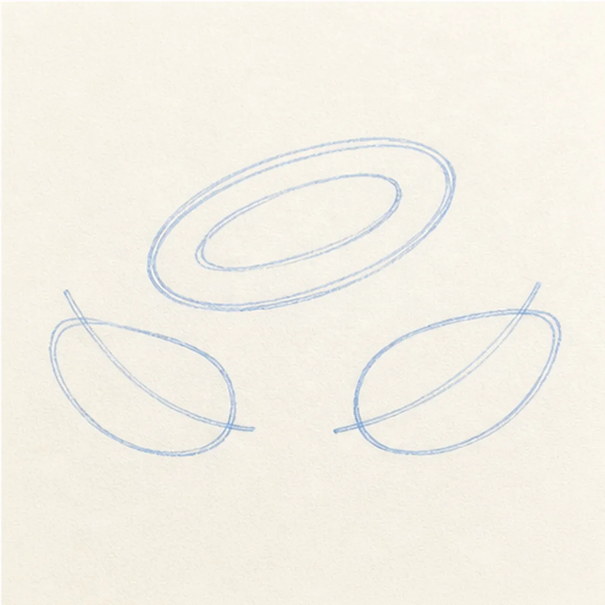
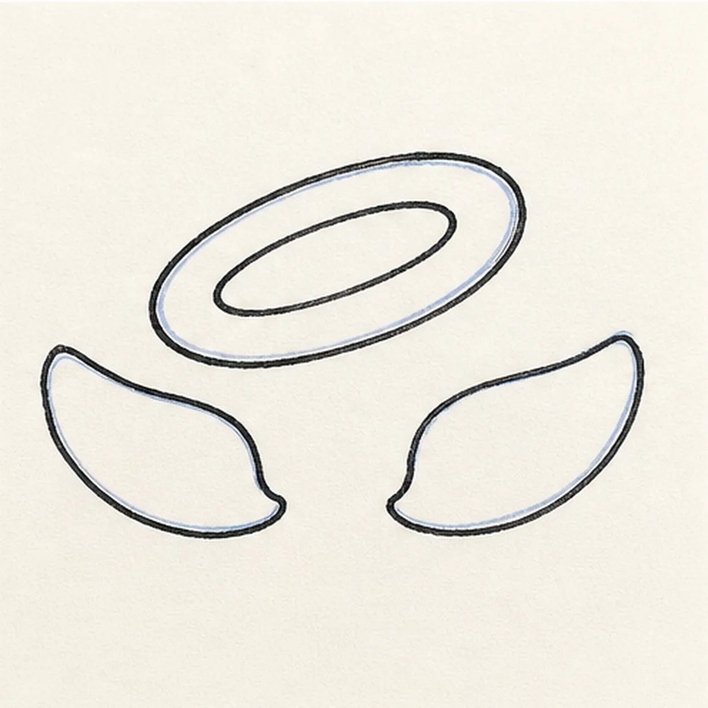
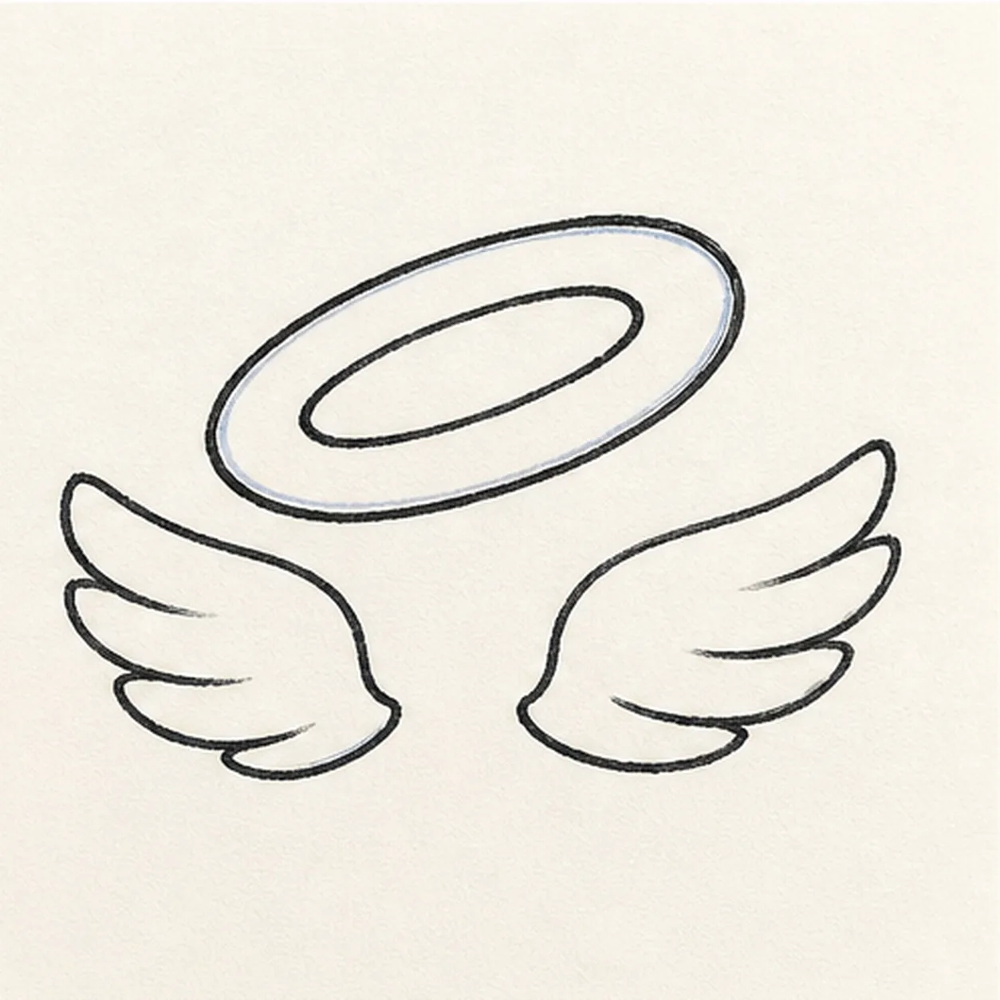
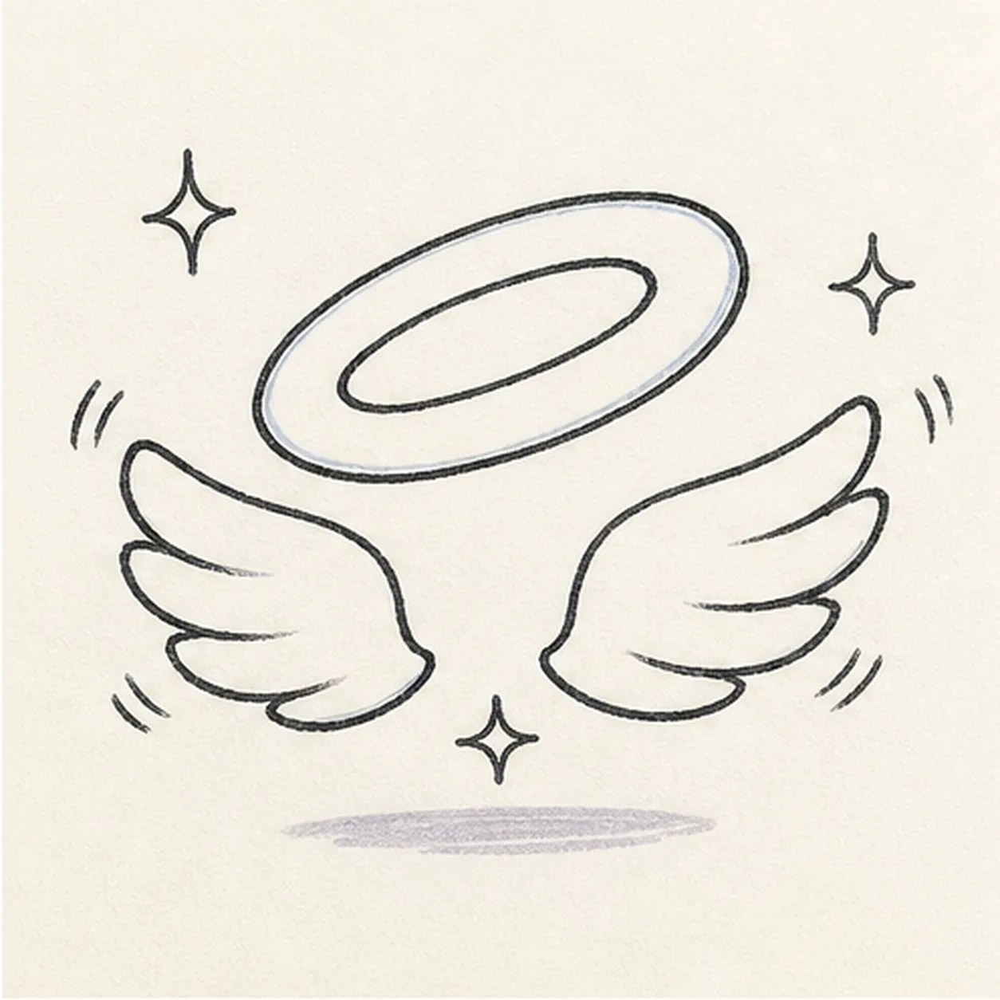
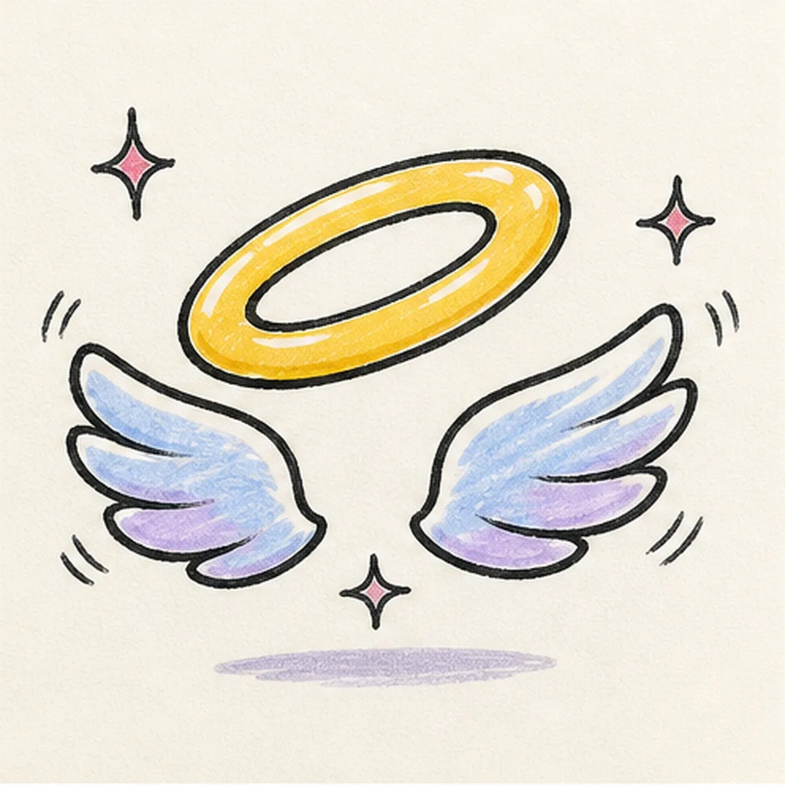

Felt-tip marker mode
Let's draw an angel halo with wings
Treat this as one playful practice round: sketch the idea loosely, simplify the shapes, then commit with confident marker outlines and bright fills.
-
01

Float the halo guides
Draw a light tilted outer ellipse with a matching inner ellipse, then place two outward-sweeping wing axes and simple wing envelopes below it.
Marker tip: Ghost both halo ellipses before touching down and keep the inner opening evenly nested. Mark the two wing tips before drawing their curves so the spacing feels balanced.
-
02

Shape the halo and wings
Wrap the guides with one thick halo ring and two rounded wing silhouettes, keeping the center gap open.
Marker tip: Rotate the page for the halo curves and draw each in one relaxed pass. Let the wings feel related without forcing them into mechanical mirror images.
-
03

Layer the wing feathers
Divide each established wing into exactly three broad feather layers and clarify the inner halo opening.
Marker tip: Place the feather tips first, then connect them back toward each wing base. Break hidden lines where one feather layer overlaps the next instead of drawing through it.
-
04

Add the floating sparkle
Add exactly three small sparkle bursts, a few short lift marks, and one shallow floating shadow around the halo and wings.
Marker tip: Keep the sparkles separated from the main contours and aim the motion marks outward. You can vary their angles while keeping the count and open composition clear.
-
05

Ink and color the angel symbol
Thicken every established contour with black marker, fill the halo golden yellow, shade the wings pale blue and lavender, add raspberry sparkles, and tint the floating shadow.
Marker tip: Pull the wing color from base toward feather tip and leave a few narrow paper highlights. Let each fill dry before touching its black edge again.
-
06

Make the halo glow
Strengthen the keeper outlines and clarify the established halo, feather layers, sparkles, lift marks, marker fills, highlights, and floating shadow.
Marker tip: Count one halo, two wings, three feather layers per wing, and three sparkles, then stop. A head, face, figure, words, enclosing outline, sticker edge, or badge frame is not needed.